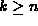
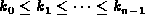
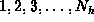
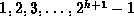
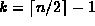
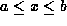
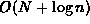
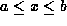
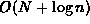

Data Structures and Algorithms
with Object-Oriented Design Patterns in C++
Data Structures and Algorithms
with Object-Oriented Design Patterns in C++


-
For each of the following key sequences
determine the binary search tree obtained when the keys
are inserted one-by-one in the order given
into an initially empty tree:
- 1, 2, 3, 4, 5, 6, 7.
- 4, 2, 1, 3, 6, 5, 7.
- 1, 6, 7, 2, 4, 3, 5.
-
For each of the binary search trees
obtained in Exercise
 determine the tree obtained when the root is withdrawn.
determine the tree obtained when the root is withdrawn. -
Repeat Exercises and for AVL trees.
-
Derive an expression for the total space needed to
represent a tree of n internal nodes
using each of the following classes:
- BST defined in Program ,
- AVLTree defined in Program ,
- MWayTree defined in Program , and
- BTree defined in Program .
Hint: For the MWayTree and BTree assume
that the tree contains are k keys, where . -
To delete a non-leaf node from a binary search tree,
we swap it either with the smallest key its right subtree
or with the largest key in its left subtree
and then recursively delete it from the subtree.
In a tree of n nodes,
what its the maximum number of swaps needed to delete a key?
-
Devise an algorithm to compute the internal path length of a tree.
What is the running time of your algorithm?
-
Devise an algorithm to compute the external path length of a tree.
What is the running time of your algorithm?
-
Suppose that you are given a sorted sequence of n keys,
,
to be inserted into a binary search tree.
-
What is the minimum height of a binary tree
that contains n nodes.
-
Devise an algorithm to insert the given keys
into a binary search tree so that the height
of the resulting tree is minimized.
-
What is the running time of your algorithm?
-
Devise an algorithm to construct an AVL tree of a given height h
that contains the minimum number of nodes.
The tree should contain the keys
,
where
 is given by Equation .
is given by Equation . -
Consider what happens when we insert the keys
 one-by-one in the order given
into an initially empty AVL tree for
 .
Prove that the result is always a perfect tree of height h.
.
Prove that the result is always a perfect tree of height h. -
The Find routine defined in Program is recursive.
Write a non-recursive routine to find a given item
in a binary search tree.
-
Repeat Exercise for the FindMin function
defined in Program .
-
Devise an algorithm to select the key
in a binary search tree.
E.g., given a tree with n nodes,
k=0 selects the smallest key,
k=n-1 selects the largest key,
and  selects the median key.
-
Devise an algorithm to test whether a given binary search tree
is AVL balanced.
What is the running time of your algorithm?
-
Devise an algorithm that takes two values,
a and b such that
 ,
and which visits all the keys x in a binary search tree
such that .
The running time of your algorithm should be ,
where N is the number of keys visited
and n is the number of keys in the tree.
,
and which visits all the keys x in a binary search tree
such that .
The running time of your algorithm should be ,
where N is the number of keys visited
and n is the number of keys in the tree. -
Devise an algorithm to merge the contents of two binary search
trees into one.
What is the running time of your algorithm?
-
(This question should be attempted
after reading Chapter ).
Prove that a complete binary tree (Definition )
is AVL balanced.
-
Do Exercise .
-
For each of the following key sequences
determine the 3-way search tree obtained when the keys
are inserted one-by-one in the order given
into an initially empty tree:
- 0, 1, 2, 3, 4, 5, 6, 7, 8, 9.
- 3, 1, 4, 5, 9, 2, 6, 8, 7, 0.
- 2, 7, 1, 8, 4, 5, 9, 0, 3, 6.
-
Repeat Exercise for B-trees of order 3.
 Copyright © 1997 by Bruno R. Preiss, P.Eng. All rights reserved.
Copyright © 1997 by Bruno R. Preiss, P.Eng. All rights reserved.